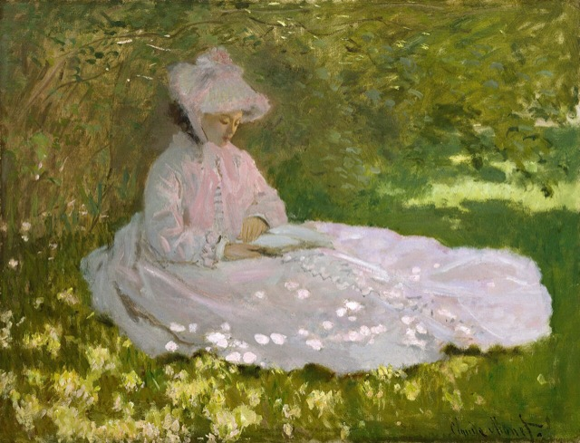

About
Five careers, one habit of mind.
Paths diverged, more than once, on the road less travelled. Yet every turning left the same lesson – to look more closely, at systems, at ideas, at people, and at what is owed to the world we share.
The route
-
Medicine
The smallest fault can bring a whole body down.
-
English literature
Ideas are plenty; the worthy ones wait for a patient eye.
-
Advertising
Move quickly, and never mistake the first idea for the best.
-
Human resources
Behind every figure, someone who shows up each morning.
-
Sustainability risk (now)
The planet does not need a saviour. We do.

The middle child
It is a common case for middle children to learn early to keep their own company, and it was perhaps at the age of five that I learnt this quiet truth.
I had inherited something of my father’s imagination and my mother’s silence, so it came as no surprise, then, that I turned out a dreamer.
And on the day I set out on a road of my own choosing, I did not look back at the one that had led me there.
What I believe
People are part of sustainability, not an afterthought to it.
We set our targets and measure our risks, as though Mother Nature might be persuaded to read them. She does not. She files no reports, faces no shareholders, and chooses her doorsteps at her fancy.
Nature thrives without us, but will we?
Read the essay: Nature thrives without us, but will we? (opens in a new tab)Currently
- Reading
- A collection of George Orwell’s essays.
- Learning
- Website development.
- Thinking about
- Why were hurricanes named after women?
Updated